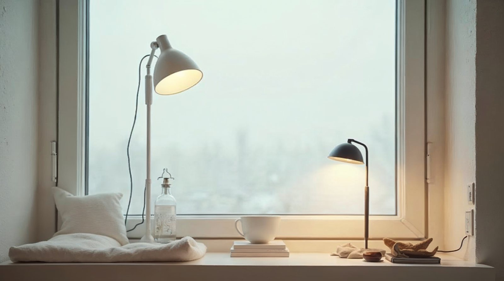
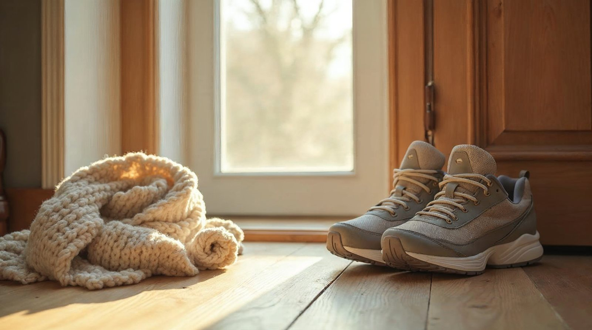
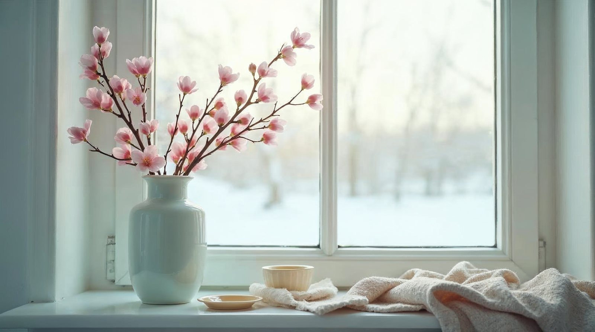

이종호 한의사 감수좋은꿈참사랑한의원 대표원장 (한의사 면허번호 19769)발행 2026-11-26 · 수정 2026-11-26
이 글의 차례
오후 다섯 시인데 창밖이 벌써 어둑합니다. 퇴근길 버스 창에 비친 내 얼굴이 유난히 지쳐 보이고, 집에 오면 아무것도 하기 싫어 소파에 몸을 묻습니다. 저녁을 먹고 나서도 과자 봉지에 손이 가고, 밤에는 열 시간을 자도 아침에 몸이 무겁습니다. 그러다 봄이 오면 언제 그랬냐는 듯 기운이 돌아옵니다.
진료실에서 "겨울만 되면 사람이 달라지는 것 같아요"라는 말씀을 해마다 이맘때 듣습니다. 본인도 가족도 처음에는 '추워서 그렇겠지', '연말이라 피곤하겠지' 하고 넘기다가, 이런 흐름이 몇 해째 되풀이된다는 것을 깨닫고 나서야 진료실을 찾으십니다.
해가 짧아지는 계절에 맞춰 기분과 기운이 가라앉았다가 해가 길어지면 풀리는 흐름을 계절성 우울, 흔히 겨울 우울이라고 부릅니다. 계절 탓으로만 돌리고 몇 달을 버티기보다, 빛과 몸의 리듬을 함께 살펴보면 그 몇 달을 조금 덜 무겁게 지나갈 수 있습니다.
계절성 우울은 어떤 모습으로 나타나나요?
계절성 우울은 대개 가을 끝자락부터 시작해 한겨울에 가장 깊어지고, 봄이 오면서 차츰 풀립니다. 이런 흐름이 두 해 이상 비슷하게 되풀이되는 것이 특징입니다. 기분이 가라앉는 것과 함께 몸의 변화가 뚜렷하게 나타나는 경우가 많습니다.
흔히 말씀하시는 모습은 이렇습니다. 잠이 늘고 아침에 일어나기 몹시 힘듭니다. 밥, 빵, 떡, 과자처럼 탄수화물과 단 음식이 자꾸 당기고, 그러다 보니 체중이 조금씩 늘어납니다. 몸이 납덩이처럼 무겁고, 사람을 만나는 일이 귀찮아져 약속을 미루게 됩니다.
일반적인 우울은 잠이 줄고 입맛이 떨어지는 경우가 많은 반면, 겨울 우울은 반대로 잠과 식욕이 느는 모습이 흔하다는 점이 눈에 띕니다. 그래서 본인은 우울하다기보다 '게을러졌다', '살이 쪘다'고만 느끼고 지나가기도 합니다.
왜 해가 짧아지면 기분이 가라앉을까요
우리 몸에는 하루 리듬을 맞추는 시계가 있고, 그 시계를 맞추는 가장 큰 신호가 아침 빛입니다. 해가 늦게 뜨고 일찍 지는 계절에는 이 신호가 약해지면서 몸의 시계가 조금씩 뒤로 밀리고, 아침에도 몸이 밤인 줄 알고 깨어나기 힘들어집니다.
빛은 잠을 부르는 호르몬과 기분을 지탱하는 물질의 균형에도 영향을 줍니다. 빛이 부족하면 낮에도 졸리고 처지며, 기분을 받쳐 주는 힘이 약해집니다. 단 음식이 당기는 것도 몸이 빨리 기운을 끌어올리려는 반응으로 볼 수 있습니다.
추위도 한몫합니다. 날이 추우면 바깥에 나가는 시간이 줄고, 움직임이 줄어들면 잠의 질과 기분이 함께 떨어집니다. 실내에서 형광등 아래 지내는 시간이 길어질수록 몸이 받는 빛은 바깥 흐린 날보다도 훨씬 적습니다.
한의학에서는 겨울을 기운을 안으로 갈무리하는 계절로 봅니다. 그런데 몸의 양기가 원래 부족한 분은 이 시기에 기운이 지나치게 가라앉으면서 몸이 무겁고 차가워지며 의욕이 떨어지기 쉽습니다. 진료에서는 이 흐름이 손발의 냉기, 소화, 잠과 어떻게 얽혀 있는지를 함께 봅니다.
겨울 피로, 일반 우울, 갑상선 문제와는 어떻게 다른가요
연말의 바쁜 일정과 추위로 며칠 피곤한 것은 겨울 피로에 가깝습니다. 충분히 쉬면 회복되고, 흥미나 기분이 크게 떨어지지는 않습니다. 계절성 우울은 쉬어도 기운이 돌아오지 않고, 좋아하던 일에도 마음이 가지 않는 상태가 몇 주 넘게 이어집니다.
계절과 상관없이 기분 저하가 이어지거나, 봄이 되어도 풀리지 않는다면 일반적인 우울과 함께 살펴야 합니다. 이 경우에는 정신건강의학과 진료를 먼저 받아 보시길 권합니다.
몸이 무겁고 춥고 체중이 늘며 기운이 없는 모습은 갑상선 기능이 떨어졌을 때와도 비슷합니다. 피부가 유난히 건조해지고 목소리가 쉬거나 변비가 심해졌다면 내과에서 혈액 검사를 받아 보시는 것이 좋습니다. 빈혈이나 비타민D 부족도 비슷한 피로를 만들 수 있어 함께 확인해 두면 좋습니다.

내 겨울을 스스로 점검해 보기
아래 항목 가운데 몇 가지가 해마다 이맘때 나에게 해당하는지 세어 보세요. 진단이 아니라 진료실에서 이야기를 시작할 실마리입니다.
- 해마다 비슷한 시기에 기운이 빠지고 봄이면 풀린다
- 잠이 늘었는데도 아침에 일어나기가 몹시 힘들다
- 밥, 빵, 단 음식이 평소보다 많이 당긴다
- 겨울마다 체중이 조금씩 늘었다가 봄에 빠진다
- 사람을 만나는 일이 귀찮아 약속을 미루게 된다
- 좋아하던 일에도 마음이 잘 가지 않는다
해당하는 항목이 많고 몇 해째 되풀이된다면, 올해는 기분이 가라앉기 전에 미리 준비를 시작해 보세요. 이미 일상이 어려울 만큼 가라앉았다면 정신건강의학과 진료와 함께 살피시는 것이 좋습니다.
먼저 이렇게 여쭙니다
처음 오시면 저는 대략 이런 순서로 여쭙니다. 미리 생각해 오시면 이야기가 수월해집니다.
- 기분이 가라앉기 시작하는 달과 풀리는 달은 언제인가요?
- 잠드는 시각과 깨는 시각, 낮잠은 어떠신가요?
- 하루에 바깥에서 햇빛을 보는 시간은 얼마나 되나요?
- 단 음식이나 탄수화물이 당기는 시각이 있나요?
- 손발이 차거나 추위를 유난히 타시나요?
- 최근 건강검진이나 혈액 검사 결과가 있나요?
출퇴근 시간과 일하는 공간도 여쭙니다. 해가 뜨기 전에 집을 나서고 해가 진 뒤 돌아오는 생활이라면, 평일에 몸이 바깥 빛을 거의 받지 못하고 있을 수 있습니다. 창이 없는 사무실이나 지하 공간에서 일하시는 분도 마찬가지입니다.
가족 가운데 비슷하게 겨울을 힘들어하는 분이 있는지, 예전에 기분 문제로 진료를 받은 적이 있는지도 조심스럽게 여쭙니다. 답하기 어려우시면 넘어가셔도 괜찮습니다.
일상에서 먼저 해 볼 수 있는 것
계절성 우울에서 가장 먼저 챙기실 것은 아침 빛입니다. 일어나서 한두 시간 안에 바깥 빛을 20~30분 쬐는 것만으로도 몸의 시계를 앞으로 당기는 데 도움이 될 수 있습니다. 흐린 날이라도 바깥 빛은 실내 조명보다 훨씬 밝습니다.
- 일어나자마자 커튼을 활짝 열고 창가에서 아침 먹기
- 출근길 한 정거장 먼저 내려 걷기
- 점심 뒤 10~15분 바깥 산책하기
- 기상 시각을 주말에도 한 시간 안쪽으로 맞추기
- 단 간식은 식사 뒤에 조금만, 빈속에는 피하기
- 일주일에 한 번은 사람을 만나는 약속 지키기
움직임은 기분을 받쳐 주는 가장 가까운 방법 가운데 하나입니다. 숨이 약간 찰 정도로 걷는 것이 좋고, 추운 날에는 실내 계단 오르기나 집에서 하는 맨손 체조로 대신하셔도 됩니다. 한 번에 길게보다 매일 조금씩이 오래갑니다. 가능하면 해가 떠 있는 낮 시간에 바깥에서 걸으면 빛과 움직임을 한꺼번에 챙길 수 있습니다.
잠이 늘었다고 해서 오래 누워 있는 것이 회복으로 이어지지는 않습니다. 오히려 아침 시각이 뒤로 밀리면서 낮에 더 처지기 쉽습니다. 잠드는 시각보다 일어나는 시각을 먼저 고정하고, 낮잠은 오후 3시 전에 20분 안쪽으로만 주무시길 권합니다.
식사는 아침을 거르지 않는 것부터 시작해 보세요. 아침을 먹으면 몸의 시계가 하루가 시작되었다는 신호를 하나 더 받습니다. 단 음식이 당길 때는 밥 양을 무작정 줄이기보다 단백질 반찬과 채소를 먼저 드시면 오후 허기가 덜해집니다.
몸을 따뜻하게 지키는 것도 기운을 아끼는 방법입니다. 목과 발목, 배를 따뜻하게 감싸고, 저녁에는 미지근한 물로 샤워하거나 족욕을 해 보세요. 몸이 덜 움츠러들면 바깥에 나갈 마음도 조금 쉽게 생깁니다.
저녁 시간의 화면 빛은 줄이는 쪽이 좋습니다. 아침 빛은 몸의 시계를 앞으로 당기지만, 밤늦게 휴대폰과 텔레비전의 밝은 빛을 오래 보면 시계가 다시 뒤로 밀립니다. 잠들기 한 시간 전에는 조명을 낮추고 화면을 멀리 두세요.

겨울이 오기 전에 미리 준비하기
계절성 우울은 해마다 비슷한 시기에 찾아온다는 점에서 미리 대비할 수 있다는 장점이 있습니다. 지난 몇 해 기분이 가라앉기 시작한 달을 알고 있다면, 그보다 몇 주 앞서 아침 빛과 걷기 습관을 미리 들여 두세요.
연말 일정도 미리 살펴 두시면 좋습니다. 모임과 야근이 몰리는 시기에는 잠이 밀리고 술자리가 늘면서 기분이 더 쉽게 가라앉습니다. 꼭 필요한 약속만 남기고, 몰리는 주 앞뒤로는 쉬는 저녁을 일부러 비워 두세요.
가족에게 미리 알려 두는 것도 도움이 됩니다. "내가 겨울에 좀 처지는 편이니, 주말에 같이 걷자고 해 줘" 한마디면 혼자 버티는 시간이 줄어듭니다. 가라앉은 뒤에는 도움을 청하는 일조차 어렵게 느껴지기 때문입니다.
가족이 먼저 알아차릴 수 있는 변화
계절성 우울은 본인보다 곁에 있는 사람이 먼저 알아채는 경우가 많습니다. 주말 내내 이불 밖으로 나오지 않거나, 즐겨 보던 프로그램에도 반응이 없거나, 평소보다 짜증이 늘고 말수가 줄어든다면 겨울이 마음에 내려앉고 있다는 신호일 수 있습니다.
이럴 때 "왜 그렇게 늘어져 있어"라는 말보다 "같이 잠깐 걸을까" 하는 제안이 훨씬 도움이 됩니다. 기운이 없는 사람에게 혼자 움직이라고 하기보다, 함께 몸을 일으키는 쪽이 부담이 적습니다.
어르신이나 혼자 지내는 가족이라면 겨울 동안 연락을 조금 더 자주 드려 보세요. 짧은 안부 전화 한 통이 하루의 리듬을 붙잡아 주는 끈이 되기도 합니다.
가라앉은 날을 지나는 작은 방법
기운이 바닥인 날에는 큰 계획을 세우기보다 아주 작은 일 하나를 정해 보세요. 커튼 열기, 세수하고 옷 갈아입기, 집 앞 편의점까지 다녀오기처럼요. 작은 일을 해냈다는 느낌이 다음 일을 할 힘을 조금 보태 줍니다.
스스로를 탓하는 생각이 들 때는 '지금은 겨울이라 몸의 시계가 느려진 것'이라고 이름 붙여 보세요. 게으름이 아니라 빛과 리듬의 변화라는 것을 알면, 나를 몰아세우는 마음이 조금은 느슨해질 수 있습니다.
한의원에서 함께 살필 수 있는 경우
- 겨울마다 몸이 무겁고 처지며 아침에 일어나기 힘든 경우
- 손발이 유난히 차고 추위를 많이 타면서 기운이 없는 경우
- 단 음식과 군것질이 늘면서 속이 더부룩하고 체중이 느는 경우
- 잠을 오래 자도 개운하지 않고 낮에 졸린 경우
- 정신건강의학과 진료와 함께 몸의 냉기와 피로를 살피고 싶은 경우
좋은꿈참사랑한의원에 오시면 모든 분의 맥을 먼저 짚고, 손발과 배의 온도, 소화, 잠과 대변 상태를 함께 확인합니다. 필요하다고 판단되면 인바디로 체성분을 살펴 겨울 동안의 변화를 함께 봅니다.
진찰한 내용을 바탕으로 아침 빛과 기상 시각처럼 생활에서 바꿔 볼 것 하나와 함께 침, 온열 관리, 한약 상담 가운데 지금 상태에 맞는 것을 정합니다. 한약을 상의할 때는 드시는 약을 모두 확인하고 신중하게 정합니다. 처방받은 약은 처방한 선생님과 상의 없이 멈추지 않습니다.
이렇게 기록해 오시면 상담이 쉬워집니다
2주 정도 아래 내용을 간단히 적어 보세요. 빠진 날이 있어도 괜찮습니다.
- 그날 기분과 기운(0~10점)
- 일어난 시각, 잠든 시각, 낮잠
- 바깥에서 빛을 본 시간
- 걷거나 움직인 시간
- 단 음식이나 군것질을 드신 시각
기록을 나란히 놓으면 아침 빛을 쬔 날과 걸은 날에 기분 점수가 어떻게 달랐는지 보이기 시작합니다. 그 차이가 겨울을 지나는 나만의 방법을 찾는 실마리가 됩니다.

봄을 기다리며 겨울을 지나기
겨울은 해마다 찾아오지만, 그 겨울을 지나는 방법은 조금씩 달라질 수 있습니다. 아침 커튼 열기, 점심 산책, 일정한 기상 시각처럼 작은 습관이 모이면 그 겨울을 지나는 일이 조금은 덜 버거워질 수 있습니다.
이번 주에는 아침에 일어나 커튼을 열고 창가에서 5분 머무는 것부터 해 보세요. 다음에 오시면 2주 동안의 기분 점수와 빛 기록부터 함께 펼쳐 보겠습니다.
이런 증상은 먼저 확인이 필요합니다
- 스스로를 해칠 생각이 들면 ☎ 109로 바로 연락하세요.
- 며칠째 거의 먹지도 자지도 못하거나, 일상을 이어 가기 어려울 만큼 가라앉은 경우
이런 신호가 있으면 한의원보다 가까운 병원이나 응급실을 먼저 찾으세요.
함께 읽으면 좋은 글
- 기분이 2주 넘게 가라앉고 잠·입맛·흥미가 떨어질 때는 어떻게 살피나요?
- 출근할 때도 퇴근할 때도 어두운 겨울에 기분이 가라앉으면 어떻게 살피나요?
- 겨울 아침에 일어나기 유난히 힘들 때는 무엇을 살피나요?
- 충분히 쉬어도 몸이 늘 피곤한 만성피로는 어떤 점을 살펴보나요?
- 의욕이 없고 번아웃처럼 지칠 때는 한의원에서 무엇을 먼저 묻나요?

여쭙는 것
- 기분이 가라앉기 시작하는 달과 풀리는 달은 언제인가요?
- 잠드는 시각과 깨는 시각, 낮잠은 어떠신가요?
- 하루에 바깥에서 햇빛을 보는 시간은 얼마나 되나요?
생활에서 해 볼 것
- 일어나자마자 커튼을 활짝 열고 창가에서 아침 먹기
- 출근길 한 정거장 먼저 내려 걷기
- 점심 뒤 10~15분 바깥 산책하기
한의원에서 함께 살필 것
- 겨울마다 몸이 무겁고 처지며 아침에 일어나기 힘든 경우
- 손발이 유난히 차고 추위를 많이 타면서 기운이 없는 경우
- 단 음식과 군것질이 늘면서 속이 더부룩하고 체중이 느는 경우
먼저 확인이 필요한 신호
- 스스로를 해칠 생각이 들면 109로 바로 연락하세요.
- 며칠째 거의 먹지도 자지도 못하거나, 일상을 이어 가기 어려울 만큼 가라앉은 경우
한눈에 보는 표
| 구분 | 핵심 |
|---|---|
| 여쭙는 것 | 기분이 가라앉기 시작하는 달과 풀리는 달은 언제인가요? 잠드는 시각과 깨는 시각, 낮잠은 어떠신가요? |
| 생활에서 해 볼 것 | 일어나자마자 커튼을 활짝 열고 창가에서 아침 먹기 출근길 한 정거장 먼저 내려 걷기 |
| 한의원에서 함께 살필 것 | 겨울마다 몸이 무겁고 처지며 아침에 일어나기 힘든 경우 손발이 유난히 차고 추위를 많이 타면서 기운이 없는 경우 |
| 먼저 확인이 필요한 신호 | 스스로를 해칠 생각이 들면 109로 바로 연락하세요. 며칠째 거의 먹지도 자지도 못하거나, 일상을 이어 가기 어려울 만큼 가라앉은 경우 |
자주 묻는 질문
겨울에만 우울한 것도 진료를 받아야 하나요?
몇 해째 되풀이되고 일상이 버겁게 느껴진다면 상담을 받아 보시길 권합니다. 기분 저하가 2주 넘게 이어지고 생활이 어려울 정도라면 정신건강의학과 진료가 먼저입니다.
햇빛 대신 밝은 조명을 켜 두면 도움이 되나요?
일반 실내 조명은 바깥 빛보다 훨씬 어두워서 대신하기 어렵습니다. 아침에 잠깐이라도 바깥에 나가 빛을 쬐는 쪽을 먼저 권하고, 빛 치료 기구는 정신건강의학과와 상의해 보세요.
겨울마다 살이 찌는데 다이어트부터 해야 하나요?
겨울 체중 증가는 빛, 잠, 움직임과 함께 움직이는 경우가 많습니다. 굶기보다 아침을 챙기고 걷는 시간을 늘리는 것부터 시작해 보시길 권합니다.
한약을 먹으면 겨울에 덜 처질 수 있나요?
진찰한 뒤 냉기, 소화, 잠의 흐름에 맞춰 함께 정합니다. 드시는 약을 모두 확인하고 신중하게 정하며, 생활 리듬을 함께 챙기는 것을 전제로 합니다.
좋은꿈참사랑한의원은 재진 때 지난번 이야기부터 이어서 여쭙니다. 진료시간과 예약은 오시는 길에서 확인하세요.
어디서 상담받을 수 있나요?
좋은꿈참사랑한의원은 서울 동작구 만양로2길 2 신성빌딩 3층·5층(서울 동작구 상도동, 7호선 상도역 3번 출구 근처)에 있습니다. 한의사 3명(이종호 대표원장, 조영기 수석진료원장, 정원영 진료원장)이 진료합니다. 진료시간은 평일 09:30~20:00(점심 13:00~14:00), 토·일·공휴일 09:30~15:00이며, 방문 전 전화로 확인을 권합니다. 예약은 네이버 예약, 카카오톡 상담, 전화 02-815-7510로 받습니다.
이 글은 일반적인 건강 정보이며 개인의 진단이나 치료를 대신하지 않습니다. 증상이 있거나 복용 중인 약이 있다면 진료를 통해 확인하세요. 치료 효과는 개인마다 다를 수 있습니다.
작성 기준: 일반적으로 알려져 있는 건강 정보를 참고해 정리했습니다(대표원장 감수). 증상 기록은 1~2주 동안 하루 1회, 비슷한 시간에 적어 오시면 지난 상태와 비교하기 쉽습니다.